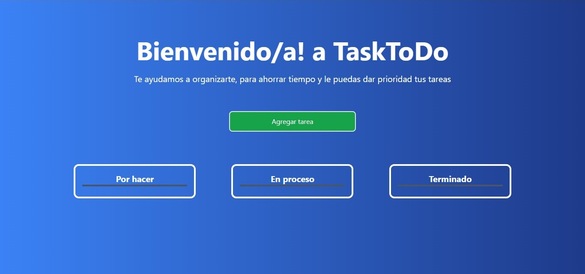

Hola!
Soy Martin Villalo Ruiz
Soy FrontEnd Developer
Actualmente radicado en Buenos Aires, Argentina
Lenguajes actuales:
Me inicié en el Desarrollo Web en 2023, y desde entonces supe que era mi pasión. He dedicado mucho tiempo y esfuerzo para aprender. Mi objetivo es seguir progresando, aspiro a ser capaz de afrontar cualquier desafío y contribuir significativamente en este ámbito.
Proyectos

En este proyecto puse como objetivo el ayudar a organizar y priorizar tareas, gracias a esto nace Task toDo. Se pueden agregar tareas, moverlas de columna y al finalizarlas esta la opcion de eliminarlas.